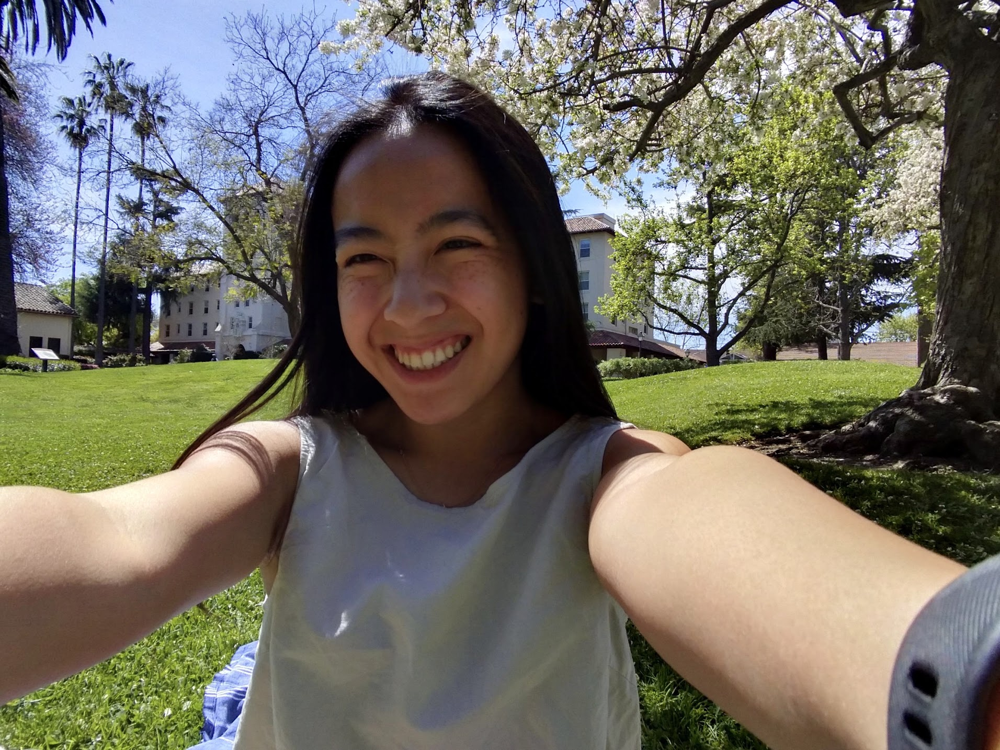
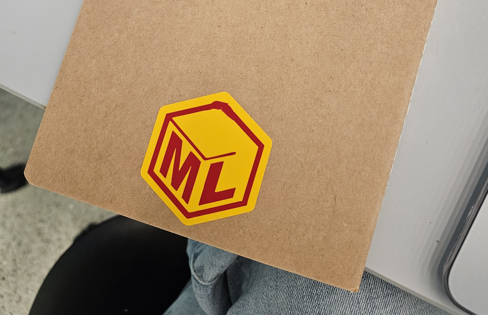
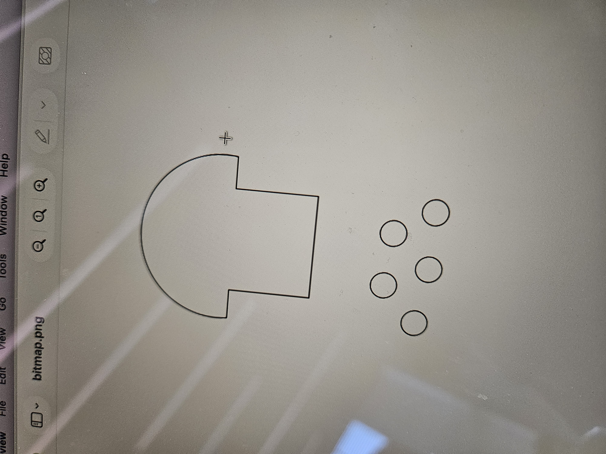
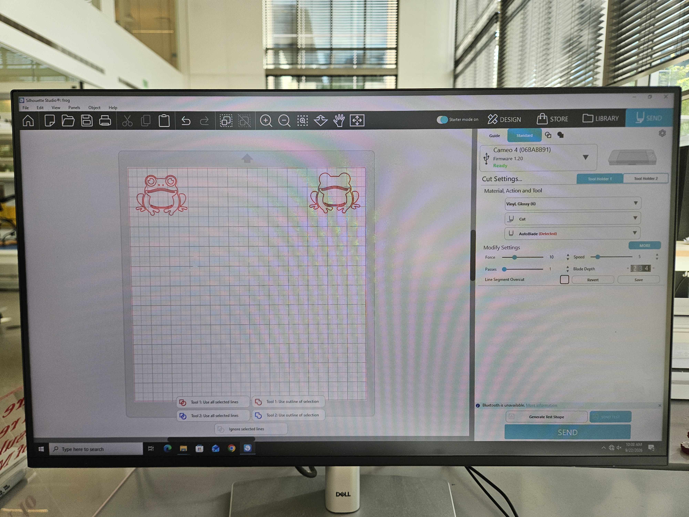
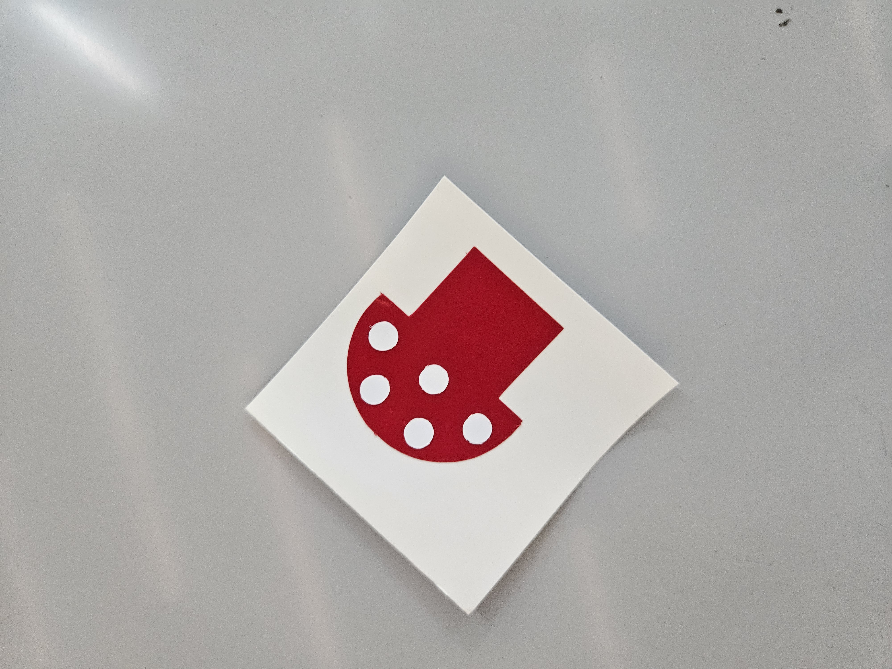
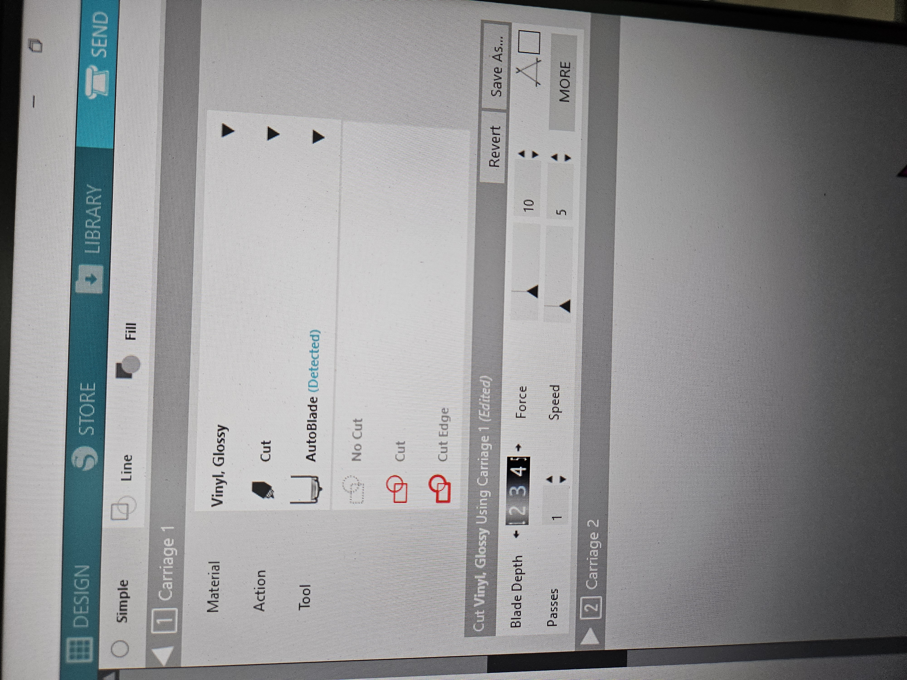
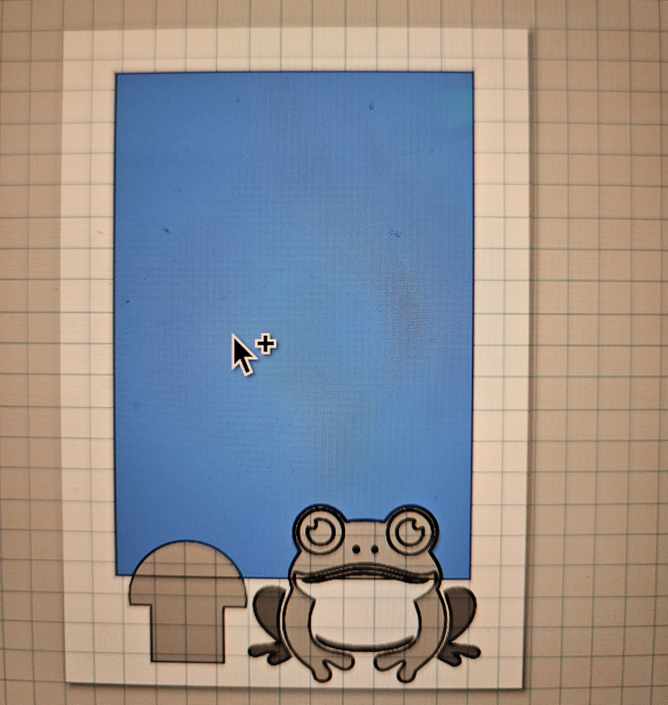
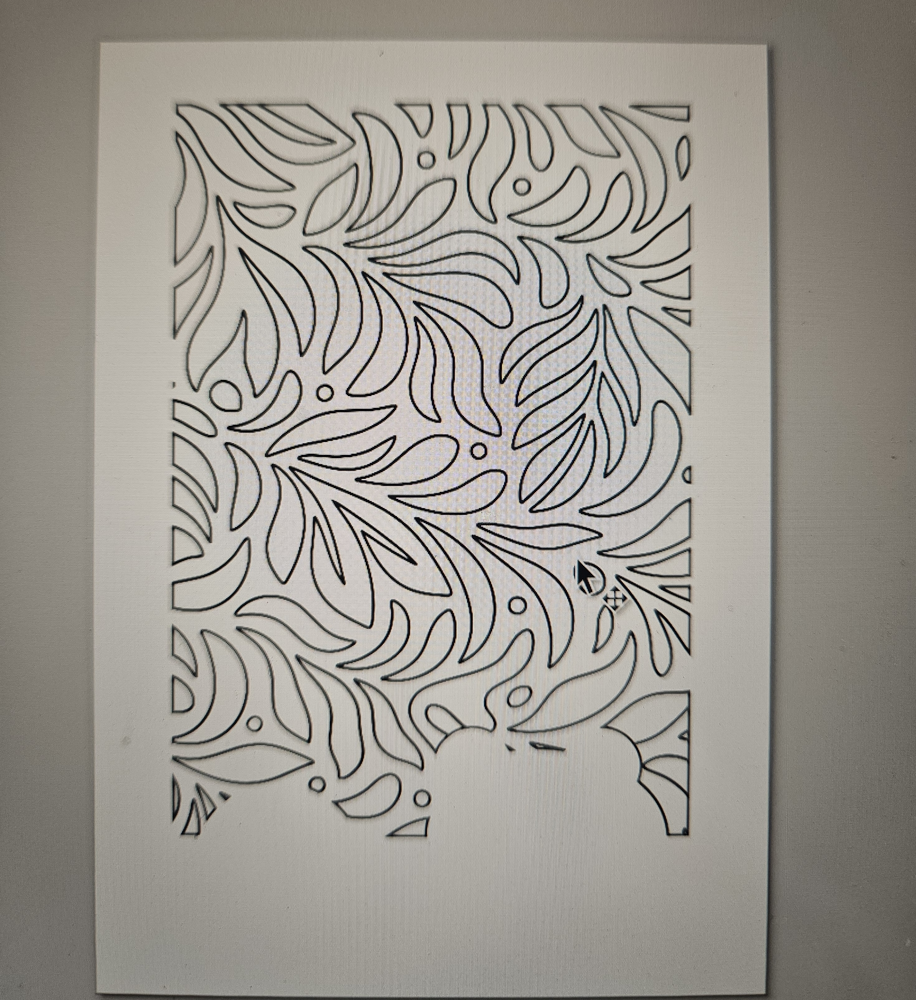

Introduction to Engineering Design and Prototyping
ENGR 2 · Maker Log

About
I'm an ʻIolani '24 and Santa Clara University '28 student with a love for learning. I major in General Engineering with a focus on culturally sustaining and accessible STEM learning by mixing HCI and the Learning Sciences.
This is where my ENGR 2 projects will be documented. In this eFolio, you can click through my projects to learn about the process, designs, and the mistakes I learned from. Make on!
Design Notebook | Silhouette Studio Sticker Making
Goals: To create a personalized design notebook with the Silhouette Studio software and a Cricut-like sticker machine. The assignment minimum is to have at least 1 non-practice double-layer vinyl sticker.
Description: This project was an introduction to the sticker-making process and Maker Lab as a whole. We followed the following process: Design → Cutting → Weeding → Transferring top layer onto bottom layer → Stickering. The design I chose was a cute/whimsical little mushroom with a froggy friend. I started with the mushroom, as I wanted to have something that I could design on Inkscape with simple shapes (rectangle, oval) before sending the components (red base, white dots) to Silhouette Studio. Then, I thought the mushroom would be lonely, so I chose to trace a free SVG of a frog directly in Silhouette Studio. The background is a leaf-paisley inspired pattern, also from Creative Commons, that is meant to invoke a whimsical forest vibe while keeping a more stylized repetition that allows the frog and mushroom to be the main focal point. The window was made in Inkscape, where I again took advantage of the boolean and bitmap tracing tools to crate my final cuts (images 6 and 7).
Time Log: Each sticker took about 20 minutes to complete, from the designing to the actual sticker-ing.
Reflection: From this experience, I learned how to use the sticker machine and Silhouette Studio software. In Silhouette Studio, I initially had trouble importing my mushroom design as an SVG, so resorted to a PNG (image 2). From there, the PNG was unable to be separated for cutting (cutting one color on the left of the cutting board, another color on the right of the cutting board), and tracing was not an option, as my Inkscape project used hairline (no tolerances could find the lines). From this, I learned to use the eraser tool and to use thicker lines if I wanted to trace images.







Acrylic LED Sign
Placeholder entry — replace with this week's trimmed log text about laser-cut acrylic, edge-lit LED wiring, and finish.
2D to 3D
Placeholder entry — replace with this week's trimmed log text about taking a flat drawing through CAD into a physical part.
Phone Stand
Placeholder entry — replace with this week's trimmed log text about ergonomics, material choice, and print settings.
Name Plate
Placeholder entry — replace with this week's trimmed log text about typography, fabrication method, and surface finish.
Final Project
Placeholder entry — replace with this week's trimmed log text about scope, build log, and outcome, updated through the term.